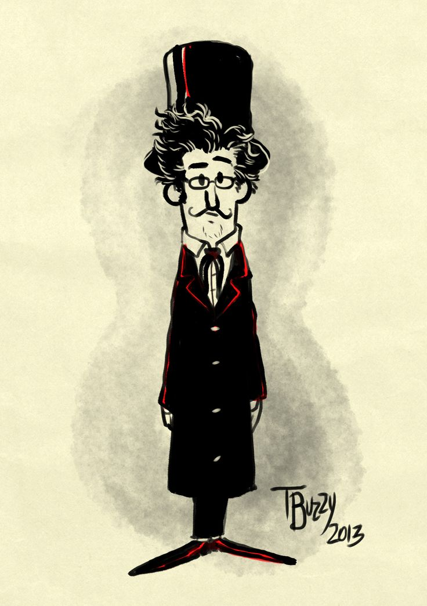
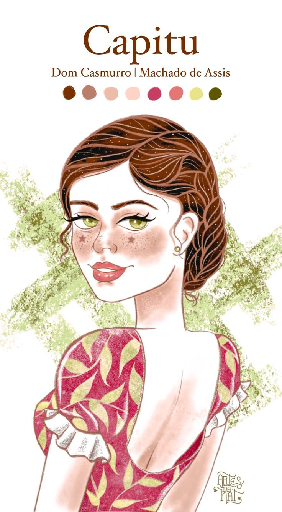

Personagens principais
Cada personagem é filtrado pela memória e pelo julgamento de um único narrador — o próprio Bentinho.

Bentinho
Narrador · protagonistaBento Santiago, o Dom Casmurro do título. Narra a própria vida décadas depois dos fatos, e é justamente a confiabilidade dessa narração que o livro coloca em xeque.

Capitu
Interesse amoroso · acusadaCapitolina Pádua, de "olhos de ressaca". Inteligente, prática e determinada, é vista de forma ambígua por Bentinho — o leitor nunca acessa seus pensamentos diretamente.
Escobar
Amigo de seminárioColega de Bentinho no seminário, torna-se seu melhor amigo e depois cunhado por afinidade. Sua morte por afogamento é o estopim da tragédia do romance.
Dona Glória
Mãe de BentinhoViúva devota, cria o filho sozinha e, por uma promessa religiosa feita ainda grávida, planeja encaminhá-lo ao seminário — origem de todo o enredo.

José Dias
Agregado da famíliaAgregado bajulador que vive na casa de Dona Glória. Suas falas exageradas e interesseiras influenciam decisões importantes da trama, incluindo o próprio envio de Bentinho ao seminário.